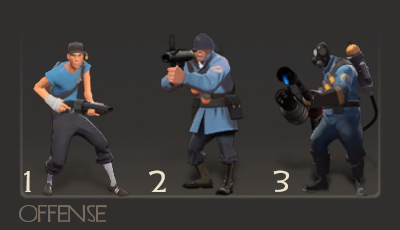
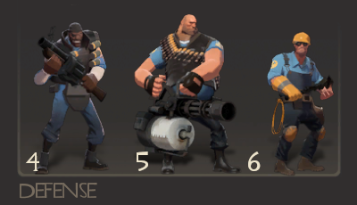
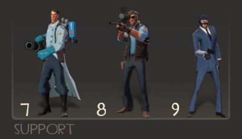

Kesembilan kelas yang tersedia secara resmi terbagi menjadi tiga: Offense, Defense, dan Support.
1. Scout
- Stock: Scattergun (Primary), Pistol (Secondary), Bat (Melee)
- HP: 125
- Kecepatan: 133%
Scout memiliki kecepatan normal yang paling tinggi pada 133%, Scout juga dapat melakukan objektif x2 lebih cepat dari karakter lain. Menggunakan primary-nya, tembakan jarak dekat (meatshot) dapat menghasilkan 105 poin damage, cukup untuk membunuh semua kelas yang ada dalam 2-3 tembakan, sementara kelincahannya membuatnya susah dibunuh.
2. Soldier
- Stock: Rocket Launcher (Primary), Shotgun (Secondary), Shovel (Melee)
- HP: 200
- Kecepatan: 80%
Soldier adalah kelas yang paling dapat diandalkan. Walau memiliki kecepatan 80%, Soldier dapat menggunakan primary-nya untuk melakukan Rocket Jump, teknik mobilitas yang membuat Soldier salah satu karakter paling lincah di game. Primary-nya dapat menghasilkan damage yang konsisten berupa 90 poin.
3. Pyro
- Stock: Flame Thrower (Primary), Shotgun (Secondary), Fire Axe (Melee)
- HP: 175
- Kecepatan: 100%
Pyro merupakan salah satu karakter yang paling unik. Dengan primary-nya ia dapat membakar musuh, dan memberikan efek DoT berupa Afterburn yang menetap sampai 10 detik. Pyro juga memiliki kemampuan Airblast yang dapat mendorong musuh dan memantulkan projektil yang ditembakkan musuh kearah yang diinginkan.
4. Demoman
- Stock: Grenade Launcher (Primary), Stickybomb Launcher (Secondary), Bottle (Melee)
- HP: 175
- Kecepatan: 93%
Demoman adalah penghasil damage terkuat di game. Primary-nya dapat menghasilkan 100 poin damage jika terkena langsung, dan secondary-nya dapat digunakan untuk membuat perangkap atau melakukan Sticky Jump seperti Rocket Jump. Terdapat varian Demoman yang menggantikan secondary-nya dengan sejenis perisai, disebut Demoknight.
5. Heavy
- Stock: Minigun (Primary), Shotgun (Secondary), Fists (Melee)
- HP: 300
- Kecepatan: 77%
Heavy memiliki HP tertinggi diantara kelas lainnya. Cara bermain Heavy lebih simpel dibanding yang lain, gunakan Minigun untuk memberi damage konsisten dan perhatikan sekitar supaya tidak terkena Backstab. Heavy dapat menggantikan secondary-nya dengan sejenis makanan yang dapat merestorasi HP.
6. Engineer
- Stock: Shotgun (Primary), Pistol (Secondary), Wrench (Melee), Construction/Destruction PDA (Extra)
- HP: 125
- Kecepatan: 100%
Tidak banyak yang bisa dikagumi dalam Engineer sendiri, sebab Engineer hanyalah sebagian kecil dari unit ciptaanya. Menggunakan Construction PDA, Engineer dapat membangun Sentry Gun yang secara otomatis menarget lawan dan menghasilkan damage yang sangat tinggi, Dispenser yang dapat merestorasi HP dan mengisi ulang ammunisi, dan Teleporter yang mempermudah perjalanan antara dua titik.
7. Medic
- Stock: Syringe Gun (Primary), Medi Gun (Secondary), Bonesaw (Melee)
- HP: 150
- Kecepatan: 107%
Kelas terpenting dalam suatu tim, tim yang tidak memiliki Medic akan lebih mudah kalah. Medic dapat menggunakan secondary-nya untuk menyembuhkan anggota tim, merestorasi HP mereka, bahkan sampai 150% dari HP normalnya. Medic juga dapat memberi ÜberCharge, yang membuat pasiennya imun dari segala bentuk damage selama 8 detik.
8. Sniper
- Stock: Sniper Rifle (Primary), SMG (Secondary), Kukri (Melee)
- HP: 125
- Kecepatan: 100%
Satu lagi kelas yang lebih sederhana. Sniper dapat menggunakan primary-nya untuk melakukan Headshot yang memberi 150 poin damage. Sniper lebih nyaman menyerang lawan dari jarak yang sangat jauh, tetapi secondary-nya dapat membantu dalam mengatasi ancaman di jarak menengah-dekat.
9. Spy
- Stock: Revolver (Primary), Sapper (Secondary), Knife (Melee), Invis Watch (Extra)
- HP: 125
- Kecepatan: 107%
Spy merupakan kelas yang paling sulit untuk dimainkan. Secondary-nya dapat meresap HP dari bangunan Engineer dan menghancurkannya. Spy dapat melakukan Backstab, yaitu menyerang bagian belakang lawan dengan melee-nya untuk membunuh lawan secara instan. Invis Watch memungkinkan Spy untuk menjadi kasat mata selama 10 detik.
Walau dibagi secara resmi menjadi tiga grup tersebut, para pemain telah membuat klasifikasi yang lebih akurat dalam model Pick, Power, dan Support:
- Pick: Yaitu kelas yang memilih target secara hati-hati. Pemain yang menggunakan kelas-kelas ini harus mengerti lawan mana yang lebih mudah dikalahkan.
- Power: Yaitu kelas yang memberikan tekanan melalui serangan berskala besar. Kelas-kelas Power seringkali didukung oleh Medic.
- Support: Yaitu kelas yang dapat mendukung anggota timnya dengan memberikan perlindungan atau mengeliminasi ancaman.